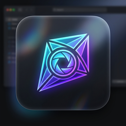
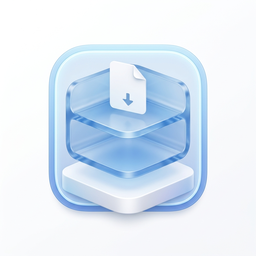
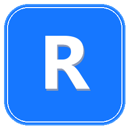

告別繁瑣的操作摩擦與雜亂工作流！Kyte Suite 整合三大核心桌面工具：
按一下空白鍵瞬開預覽的 KyteView、晃動滑鼠即刻吸附的 KyteShelf、以及 50ms 零延遲拓撲更名的 KyteRename。
純本機運作、極速直覺、零雲端隱私疑慮。

按一下 Space 空白鍵，內容瞬間彈出！支援 Office 簡報、4K 影音硬解、壓縮檔單檔拖曳抽出與程式碼語法高亮。

按住檔案晃動滑鼠，置物架立即召喚！支援剪貼簿智慧貼入、大圖懸停預覽、一鍵打包 ZIP 與 Outlook 郵件直接附加。

雙欄 50ms 零延遲對照！琥珀金正則高亮、相片 EXIF/音樂 ID3 抽取、三階段安全 DAG 拓撲換名與 Ctrl+Z 快照安全還原。
每一款軟體均為獨立專業利器，組合在一起更發揮一加一大於二的協同效應。
不再為了確認一份 PPTX 簡報或 4K 影音反覆開啟臃腫的 Office 或外掛播放器。選中檔案按一下 Space 空白鍵，內容瞬間秒開。具備 Windows 11 原生 Mica 毛玻璃材質、智慧避讓偏移與側邊釘選模式。
48 頁大綱已讀取 · 內嵌向量投影片縮圖渲染 · 解析度 1920x1080 · 耗時 18ms
在 Windows 上跨資料夾、跨應用程式移動檔案時不再手忙腳亂。當你抓住檔案並輕微左右晃動滑鼠，置物架便會自動浮現在游標手邊，讓你隨手暫存檔案，支援多次收集後一口氣拖入目的地。
結合萬級檔案虛擬滾動、琥珀金正則高亮匹配、相片 EXIF/音樂 ID3 深度抽取與三階段 DAG 拓撲改名技術。解決循環改名相撞問題，每次更名自動記錄原子快照日誌，隨時按 Ctrl+Z 毫秒級安全原路還原。
見證 KyteSuite 如何將散落的日常動作轉化為流暢無阻的優雅節奏。
在網頁下載圖片、從通訊軟體接收文件，或是跨資料夾翻找素材時，抓住檔案左右晃動游標，KyteShelf 置物架自動彈出接收，一次打包多來源資產。
在檔案清單或暫存架中，按一下 Space 空白鍵，直接預覽相片解析度、簡報投影片與影音內容，無需開啟肥大主程式即可迅速確認。
將收集好的檔案拖入 KyteRename，自動套用 EXIF 拍攝時間、音樂 ID3 標籤與智慧流水號，雙欄即時對照無誤後，透過 DAG 拓撲引擎一秒安全提交更名歸檔。
秉持極致輕量、純本機運作、無廣告、無隱私上傳的設計哲學。
| 產品與指標 | KyteView (預覽) | KyteShelf (暫存) | KyteRename (更名) |
|---|---|---|---|
| 主要功能定位 | Space 快速預覽 Office/影音/壓縮包 | 晃動召喚桌面懸浮暫存中轉架 | 雙欄 50ms 零延遲安全拓撲批次改名 |
| 啟動快捷操作 | Space / ESC | 滑鼠晃動 / Ctrl + ~ | 桌面圖示 / 右鍵選單 |
| 系統相容性 | Windows 10 / 11 (64-bit) | Windows 10 / 11 (64-bit) | Windows 10 / 11 (64-bit) |
| 資料隱私安全性 | 100% 本地端離線解析 | 純本機暫存，無雲端依賴 | 本地原子快照，支援 Ctrl+Z 還原 |
| 跨軟體生態協同 | 支援 KyteRename 管道通訊 | 支援全視窗拖放與 Outlook 附加 | 內建 Space 鍵連動 KyteView 預覽 |
全部工具均經過 Windows 10/11 嚴格編譯測試，支援乾淨卸載、純綠色便攜或標準安裝精靈。
Windows 空白鍵快速預覽神器。免 Office 預覽投影片、4K 影音硬解、壓縮檔單檔抽出。
桌面懸浮拖曳暫存置物架。晃動滑鼠立即吸附暫存、剪貼簿貼上、ZIP 打包、Outlook 串接。
次世代智慧批次重新命名神器。雙欄 50ms 零延遲預覽、琥珀金正則高亮、EXIF/ID3、安全 DAG 拓撲換名。
完全可以各自獨立單獨使用！KyteView、KyteShelf 與 KyteRename 均為獨立免依賴的 Windows 應用程式。當您同時安裝兩款以上時，程式會自動透過 Windows Named Pipe IPC 啟動雙向無縫協同功能（例如在 KyteRename 清單按 Space 喚起 KyteView 預覽）。
絕對不會！Kyte Suite 全系列產品均為 100% 本機純離線運作工具。所有的預覽渲染、中繼資料抽取、暫存與重新命名作業均在您本機電腦的記憶體與 CPU/GPU 內完成，絕不連網傳輸您的任何檔案內容，隱私絕對安全。
可以！各產品在 GitHub Releases 頁面除了提供標準 Inno Setup 安裝檔之外，亦提供便攜免安裝綠色壓縮包，解壓縮後直接雙擊執行即可使用，無需管理員提權。